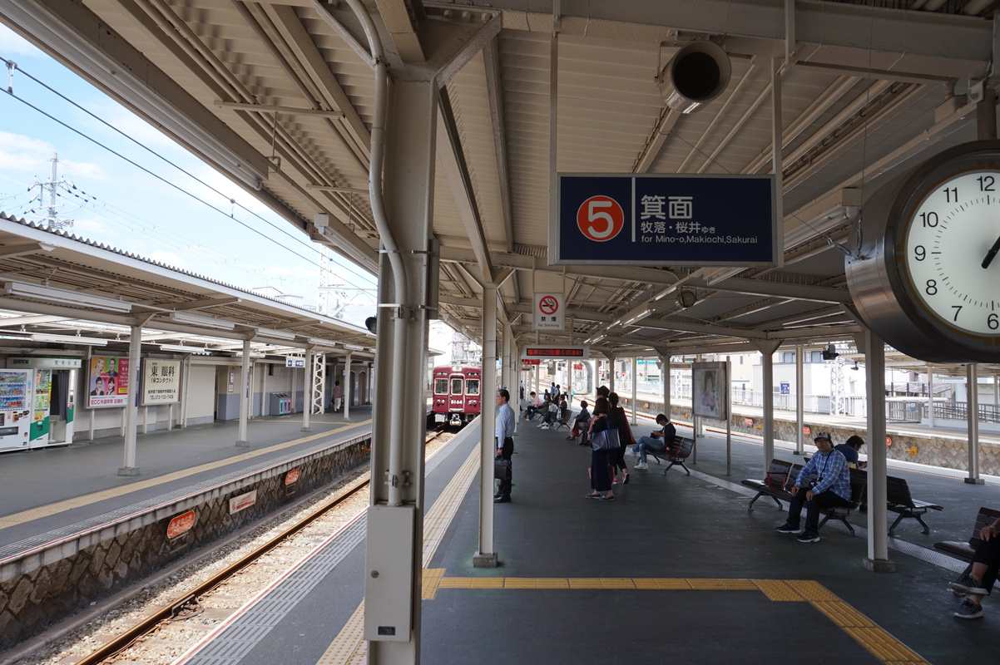
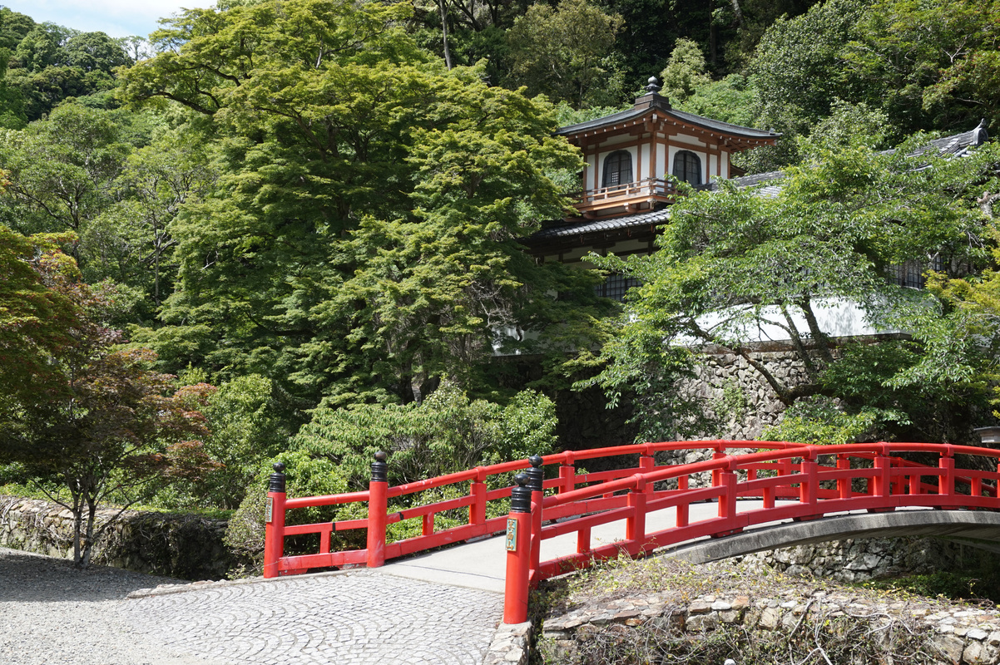
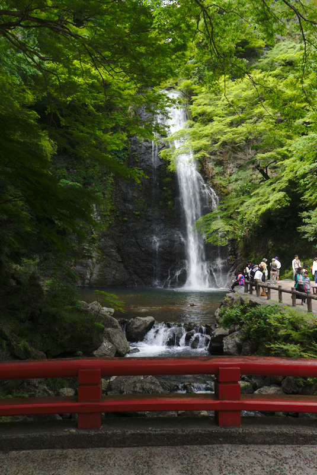
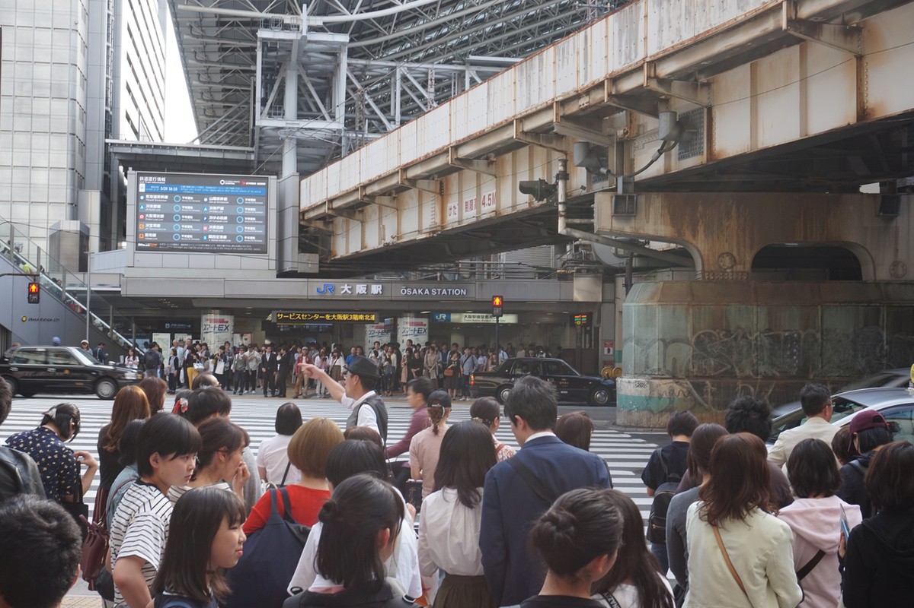

Deze dag zijn we naar Minoh park (eigenlijk “Meiji no Mori Minō Quasi-National Park”, maar goed) geweest voor een lekker rustige natuurwandeling.

Station richting Minoh
Zoals de lange naam aangeeft is dit een “National Park”, een beschermd stuk natuurgebied. Hier is een mooie wandeling te maken langs de rivier tussen de bergen.

Tempel langs de route
Aan het eind van de route ligt nog een mooie, veelbezochte, waterval.

Minoh waterval
De rest van die dag was lekker rustig. We hebben nog even in het Umeda gebied (van de hoge gebouwen) wat gegeten, en die avond heb ik vooral even gewoon wat gelezen. Is nog best vermoeiend, telkens allemaal dingen bekijken!

Drukte rond Umeda